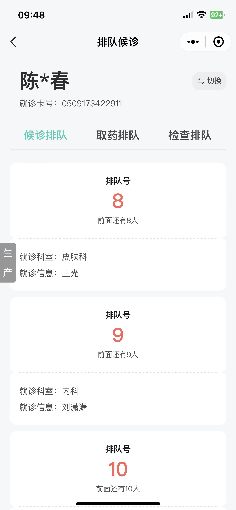

1、若用户未添加就诊人，则点击排队候诊按钮后弹窗提示用户“未添加就诊人，无法报到，请添加本人就诊人”支持用户点击弹窗取消返回院区页面或点击“添加就诊人”跳到添加就诊人页面；
2、若用户已经添加就诊人，但未添加本人就诊人，则用户则点击排队候诊按钮后弹窗提示“请先添加本人就诊人，否则无法查询排队候诊数据”支持用户点击弹窗取消返回院区页面或点击“添加就诊人”跳到添加就诊人页面；
3、当患者已添加就诊人，且当前选中患者无论任何类型，只要没有在HIS中建档则页面标红提示用户“当前就诊人未建档，请尝试在‘我的就诊人’处解绑后重新添加再试，如还是未建档，请您前往线下财务办卡窗口建档，方可使用此功能。”
4、查询时支持查询所有就诊人的排队候诊数据，根据所选中的就诊人展示相应数据；
5、排队候诊只查今天的，接口需传参时间是今天.
6、每当用户重新打开排队候诊页面需刷新排队数据，需显示排队号和前面还有N人
7、显示该就诊人当天所有的挂号就诊排队信息
8、改“就诊信息”为“医生信息”

1、协和没有取药接口，先干掉取药排队，后期有接口了再加上
2、合并检验、检查排队叫号信息到检查排队里面
3、可以查询其他就诊人检验检查排队信息
4、检查项目需要标亮并加粗显示；
5、每次重新打开候诊排队页面，实时刷新排队号和前面还有N人的数据
医生信息
医生信息
检查项目：CT
检查院区：武汉协和医院主院区
检查时间